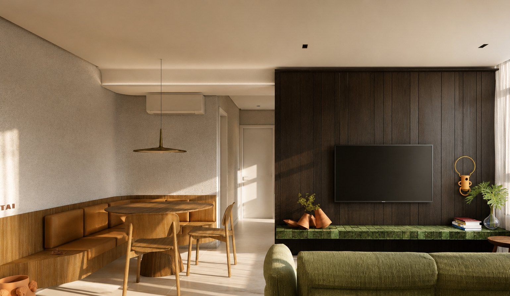
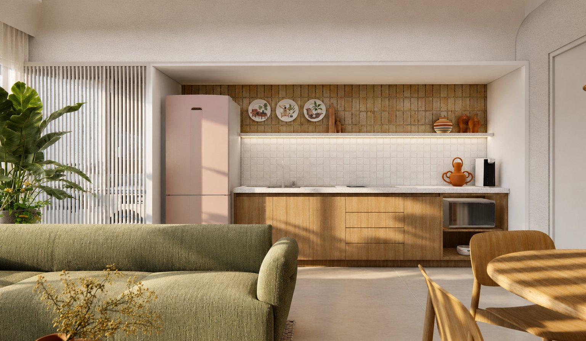
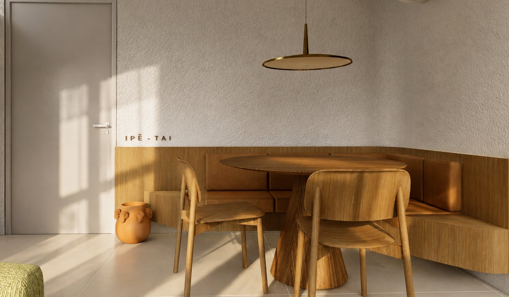
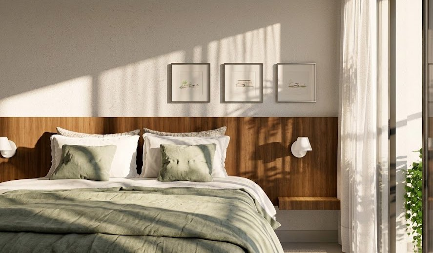
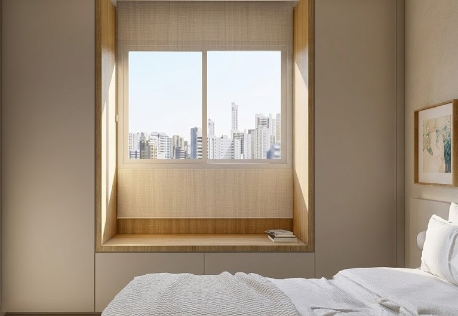
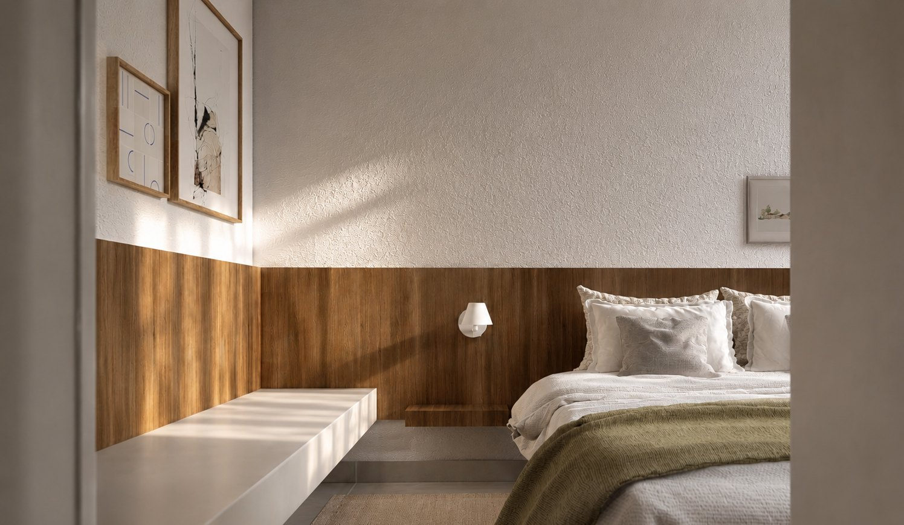
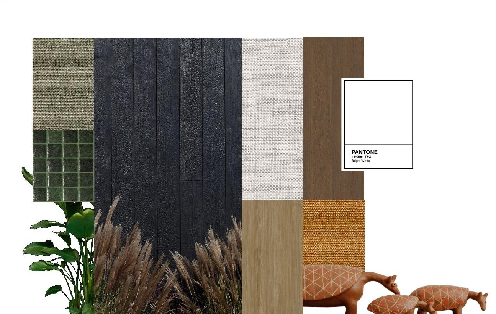
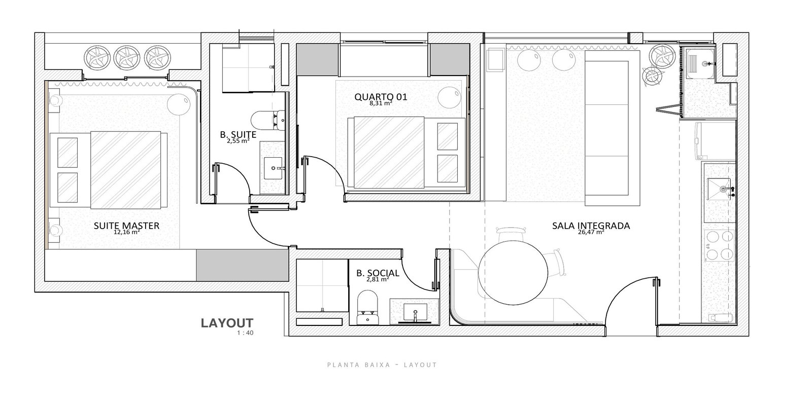

07
Apto Tai

The interior design of Apto Tai grows from a simple brief for short-stay rental, without setting aside elegance, comfort and identity. The handling of materials and forms was crucial for a clean, highly functional result for the visitor or temporary resident — easing the life of whoever lives there without giving up on refinement.
The White Ipê comes as the concept, for the seasonal, fleeting bloom that crosses the heart of the Cerrado.Project concept






Plan
Layout · 70 m² in a single gesture.
